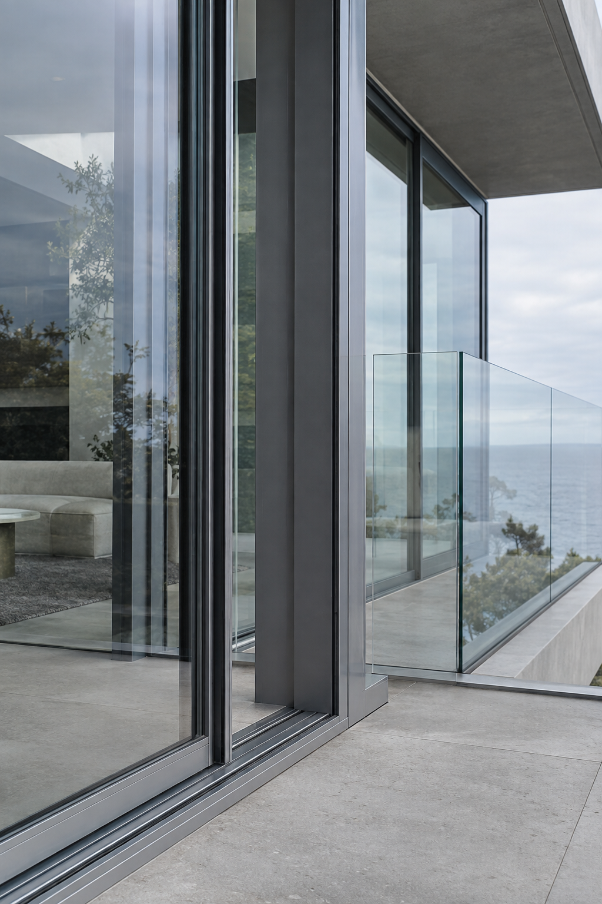

01
Architectural glazing
Glass that changes the way a space feels.
Frameless showers, balustrades, partitions, shopfronts and custom glazing—measured, fabricated and installed around the architecture.

Glass / Aluminium / Architecture
Measured, made and installed as one resolved system. Architectural glass and aluminium for homes, workplaces and everything between.
What we make
Architectural glazing
Frameless showers, balustrades, partitions, shopfronts and custom glazing—measured, fabricated and installed around the architecture.

Windows, doors, façades and frames engineered for durable, effortless everyday use.
Elegant, low-maintenance solutions designed around the way your home looks and lives.
Dependable delivery, crisp detailing and scalable installation for business and development.
Why Hozek
The finished glass is only as good as the opening, fixings, seals and tolerances behind it. We resolve those details before installation day.
You know what is being supplied, how it is finished and what the installation includes.
Measurement and installation stay connected, so details are not lost between trades.
Hardware, drainage, alignment and movement are treated as part of the design—not an afterthought.
Our approach
We read the space, the brief and the practical demands before proposing a system.
Every opening, junction and finish is considered so the installation feels inevitable.
Careful preparation and tidy execution deliver the sharp finish the design deserves.
Selected applications
Start here
A few dimensions, a drawing or two and some site photos are enough to start. We’ll help identify the right system and the cleanest path to installation.
Send your project detailsProject location · Approximate dimensions · Required finish · Target timing